This section describes the features of PTP the enable the developer to monitor activity on target parallel machines, to monitor job status, and to control jobs. It will cover the following topics:
PTP provides the System Monitoring perspective for job and system monitoring. To open the System Monitoring perspective, select Window > Open Perspective > Other ... and choose System Monitoring from the list.
Note: for a version of Eclipse that contains only the System Monitoring Perspective and the ability to submit and monitor jobs, without using Eclipse for development (no IDE capabilities), see information about Sysmon.
The System Monitoring perspective is divided into four main areas. On the left side, from top to bottom are the Monitors view, the Active/Inactive Jobs views, and the Messages and Console views. Taking up the entire right side is the System view. The contents of each view depend on the monitor that is currently selected in the Monitors view.
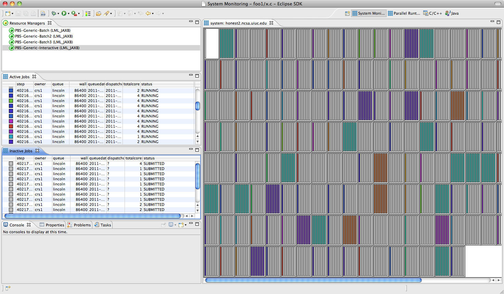
The Monitors view shows all systems that are configured for monitoring, and whether monitoring is currently active or not. The Monitors view has three columns: a Status column that displays an icon for each active monitor, a Connection column that shows the name of the connection used to connect to the remote system, and a System Type column that shows the type of system being monitored.
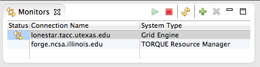
Using the toolbar buttons on this view, it is possible to start and stop monitoring a system, request a manual refresh, and add and remove monitors respectively. It is only possible to have one monitor for each combination of connection name and system type.
The view currently supports two mouse actions. Hovering over an element in the view will display a tooltip box with information about that element, including which jobs are associated with the element. Clicking on an element will highlight all associated elements (which will also be the same color) in the display. This shows the user where a particular job is running on the system.
Hover over element in system view:
Click and hold the mouse on a job in the Active jobs view to highlight the job in the system view
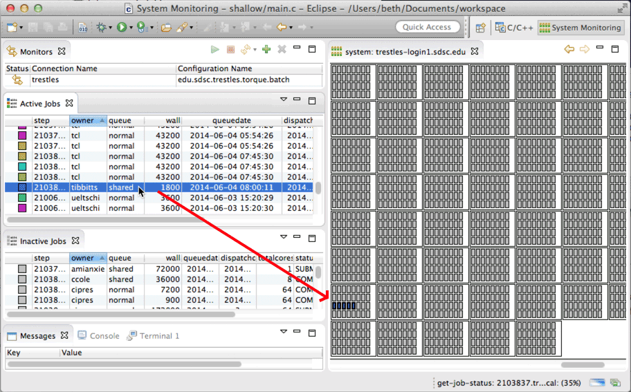
The System View supports zooming from the arrow buttons in the upper right area of the view. Zooming out successively will show, depending on the machine being monitored, successively higher levels of aggregation, from the individual cores out to the entire system. Some of these views will show a bar-graph like area for each component, with the colored areas showing a percentage of the component that the job is taking up.
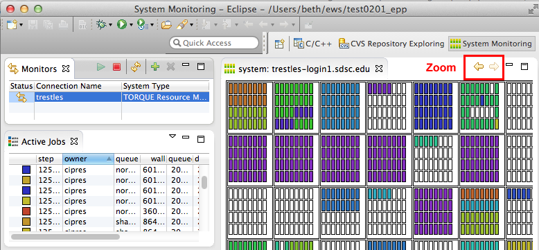
The same system zoomed out once:
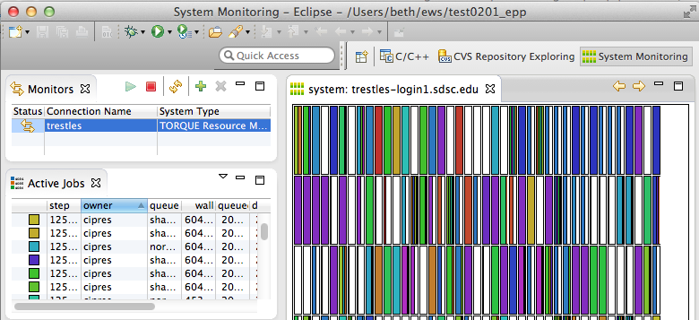
The same system zoomed out twice (fully) is shown below. The bars show the percentage of the machine that the jobs take up. The black bar at the end (presumably) aggregates all the jobs too small to be represented.
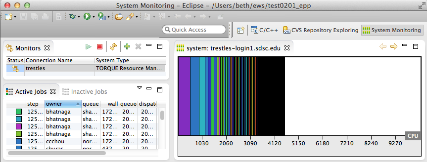
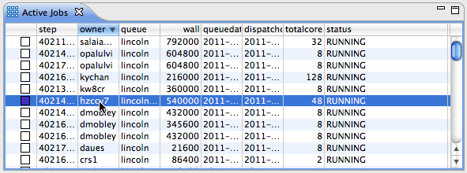
Job actions are available by right-clicking on a job in the view. The actions available will depend on the type of job, its state, and the job owner.
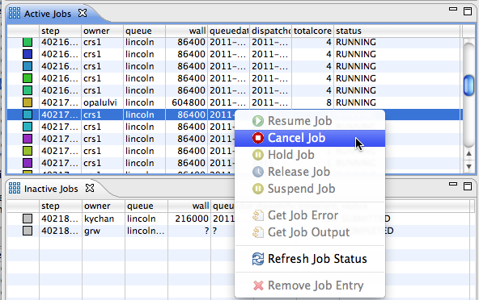
Rows in the table can be sorted by clicking on the column heading. This will cycle though a sort sequence of "ascending", "descending", and none. Columns can also be removed from the view by right-clicking on the column heading and unselecting the column name.
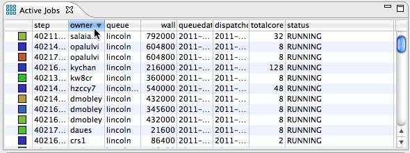
The Inactive Jobs view is essentially the same as the Active Jobs view, but displays jobs that are not currently running on the system. As these jobs don't have associated nodes in the System Monitor view, they are not assigned a color.Jobs that are launched by the user will initially appear in the Inactive Jobs view with status SUBMITTED. These jobs can be controlled (e.g. canceled) by right clicking on the job and selecting an available action. Refresh Job Status can be used to get an immediate update of the job status rather than waiting for the next update.
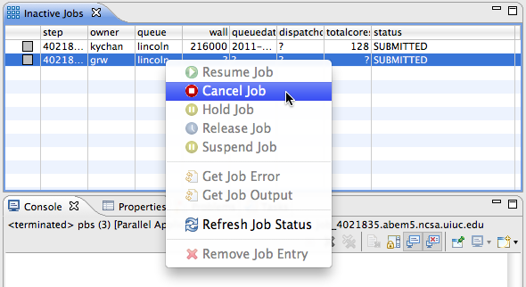
Once a job has finished executing, it will appear in this view with status COMPLETED. The stdout and stderr from the job can be displayed in the Console view by right clicking on the job and selecting the appropriate action. Completed jobs will remain in the view between Eclipse sessions, so you can leave Eclipse and return at a later time without losing information about the jobs. If you wish to remove the job from the view (permanently), use the Remove Job Entry action.
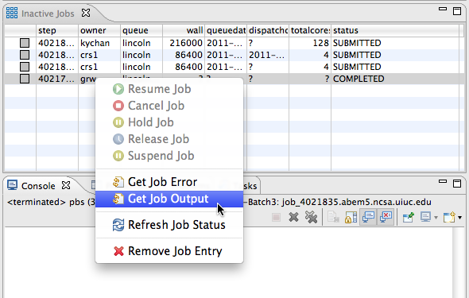
The Messages view shows information from the target system. Detailed information about the selected job can be shown here.
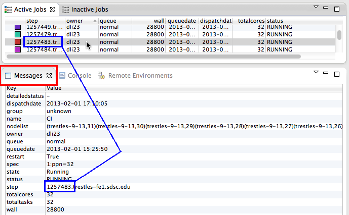
A context menu on the view allows the message of the day to be shown in this view.
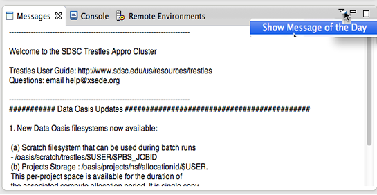
Depending on the functionality of the target system configuration, PTP can also display standard output and standard error from the parallel program in the Console view. As mentioned above, output from batch jobs is only available once the job is completed. However, output from interactive jobs is generally displayed immediately in the console view (depending on settings in the launch configuration).